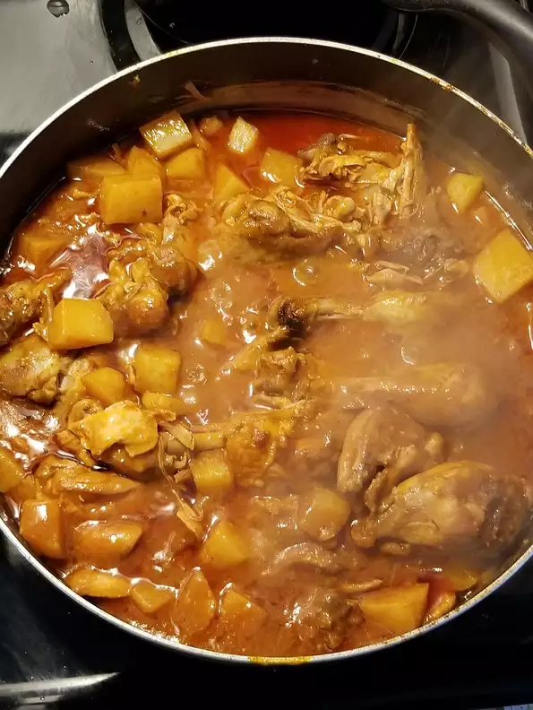

Doro Wat: Ethiopian Chicken Dish

Description
An Ethiopian chicken stew flavored with a spiced butter called niter kibbeh and berbere, a spice blend that often includes fenugreek, hot chiles, paprika, cardamom, and coriander.
Toward the end of cooking, hard-boiled eggs are added to the stew.
Ingredients
- 1 cup butter, divided
- 1 onion, chopped
- 2 1/2 cups water, divided
- 1 (6 ounce) can tomato paste
- 3/4 cup berbere seasoning
- 1 teaspoon chopped garlic
- 1/2 teaspoon ground ginger
- 4 skinless, boneless chicken breast, cubed
- 1/3 cup sweet white wine
- 1/2 teaspoon ground cardamom
- 1/2 teaspoon freshly ground black pepper
- 4 hard-boiled eggs
Steps
- Heat 1/2 cup butter in a skillet over medium-low heat.
- Cook and stir onion until translucent, 5 to 6 minutes.
- Add 1/2 cup water and tomato paste; stir until hot, about 2 minutes.
- Stir in remaining butter, berbere, garlic, and ginger.
- Adjust heat to low and cook until mixture thickens to paste consistency, 20 to 30 minutes.
- Stir remaining water into berbere paste; add chicken. Simmer until thickened to sauce consistency, about 45 minutes.
- Stir white wine, cardamom, and black pepper into the sauce; add hard-boiled eggs.
- Cook until sauce is reduced slightly, about 15 minutes more.